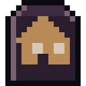

Guides / 01

First steps
Account, character, the first night and how to walk without drawing attention.
You play Footfall by actually walking. The map is your city, through GPS, and you only move forward when you walk. This guide takes you from the first tap to your first session on the street.
Account
The game needs an account with an email and password: it keeps your character, your base and your progress in the cloud. On the start screen, tap LOG IN / CREATE ACCOUNT. The password has at least 8 characters, and sign-up is confirmed with a 6-digit code sent by email.
Your survivor
- Before you set off walking: read the safety warnings and tap GOT IT, LET'S GO.
- Appearance: face, hair, skin and clothes.
- Profession and traits: each profession gives skills and a pool of points. Positive traits spend points; negative ones give them back.
A few professions to start with:
- Unemployed: no bonus, but the largest pool of points for traits.
- Police officer and Military veteran: better with firearms (the veteran already comes desensitized to panic).
- Nurse and Doctor: treat wounds faster and with fewer failures.
- Carpenter: builds and repairs the base better.
- Delivery driver: starts with the neighborhood already revealed on the map, and distance walked counts for more.
- Burglar: rummages 1.5× faster and makes less noise.
Useful traits: Light-footed (less noise), Eagle eyes (sees farther), Organized (bigger backpack), Thick skin (fewer blows turn into wounds). Be careful with Homebody (gets tired far from the base) and Smoker (needs cigarettes).
You start with the basic kit in your backpack: bat, revolver with bullets, bandages, water, food, jeans and a school backpack.
The first night
Before the map, the game offers The last delivery: you are a mail carrier on a stormy night, and it teaches you to crouch-walk, rummage, strike, shove and shoot. You can skip it with GO STRAIGHT TO THE CITY and play it later from the shelf of memories.
Session
On the map, tap START SESSION on the bottom bar. From then on your character walks with you. To stop, open the ⋯ menu:
- Sleep (end here) at the base, at an outpost or in a tent: the character rests and recovers fatigue and health.
- End session anywhere else: you lose nothing, but the rest is poor.
Seeing and being seen
- You see in a 110° cone in front of you, up to 120 m by day and 40 m at night. Buildings block your view.
- The cone follows the top of your phone (compass). If the compass gets in the way, turn it off in Settings and use the stick to look around.
- Zombies see you from about 15 m by day and 8 m at night, but a lit flashlight gets you seen from 30 m.
- Walking makes little noise; running makes much more. Noise draws whoever is nearby.
The more you walk, the better the loot
Distance walked in a session raises the chance of finding rare items (up to 15%). It only counts on foot: above about 25 km/h for a few seconds the game takes it as a vehicle, the distance stops counting and noise goes to the maximum.
Guias / 01
Primeiros passos
Conta, personagem, a primeira noite e como andar sem chamar atenção.
Footfall se joga andando de verdade. O mapa é a sua cidade pelo GPS, e você só avança quando anda. Este guia leva você do primeiro toque até a primeira sessão na rua.
Conta
O jogo precisa de uma conta com e-mail e senha: é ela que guarda o seu personagem, a base e o progresso na nuvem. Na tela inicial, toque em ENTRAR / CRIAR CONTA. A senha tem pelo menos 8 caracteres e o cadastro é confirmado com um código de 6 dígitos enviado por e-mail.
O seu sobrevivente
- Antes de sair andando: leia os avisos de segurança e toque em ENTENDI, VAMOS.
- Aparência: rosto, cabelo, pele e roupa.
- Profissão e traços: cada profissão dá habilidades e um saldo de pontos. Traços positivos gastam pontos; negativos devolvem.
Algumas profissões para começar:
- Desempregado(a): nenhum bônus, mas o maior saldo de pontos para traços.
- Policial e Militar veterano(a): melhores com armas de fogo (o militar já vem dessensibilizado ao pânico).
- Enfermeiro(a) e Médico(a): tratam feridas mais rápido e com menos falhas.
- Marceneiro(a): constrói e conserta a base melhor.
- Entregador(a): já começa com o bairro descoberto no mapa, e a distância andada rende mais.
- Arrombador(a): vasculha 1,5× mais rápido e faz menos barulho.
Traços úteis: Passos leves (menos barulho), Olhos de águia (vê mais longe), Organizado (mochila maior), Pele grossa (golpes viram menos feridas). Cuidado com Caseiro (cansa longe da base) e Fumante (precisa de cigarro).
Você começa com o kit básico na mochila: taco, revólver com balas, bandagens, água, comida, calça jeans e mochila escolar.
A primeira noite
Antes do mapa, o jogo oferece A última entrega: você é um carteiro numa noite de tempestade, e ela ensina a andar agachado, vasculhar, golpear, empurrar e atirar. Dá para pular com IR DIRETO PARA A CIDADE e jogar depois pela estante de memórias.
Sessão
No mapa, toque em INICIAR SESSÃO na barra de baixo. A partir daí o seu personagem anda com você. Para parar, abra o menu ⋯:
- Dormir (encerrar aqui) na base, num posto avançado ou numa barraca: o personagem descansa e recupera cansaço e vida.
- Encerrar sessão em qualquer outro lugar: você não perde nada, mas o descanso é ruim.
Ver e ser visto
- Você enxerga num cone de 110° à sua frente, até 120 m de dia e 40 m à noite. Prédios tapam a visão.
- O cone segue o topo do celular (bússola). Se a bússola atrapalhar, desligue em Ajustes e use o analógico para olhar.
- Zumbis te veem a uns 15 m de dia e 8 m à noite, mas a lanterna acesa faz você ser visto a 30 m.
- Andar faz pouco barulho; correr faz muito mais. O barulho chama quem está por perto.
Quanto mais anda, melhor o saque
A distância andada na sessão aumenta a chance de achar itens raros (até 15%). Só conta andando a pé: acima de uns 25 km/h por alguns segundos o jogo entende que é veículo, a distância para de contar e o barulho vai ao máximo.
Guías / 01
Primeros pasos
Cuenta, personaje, la primera noche y cómo caminar sin llamar la atención.
Footfall se juega caminando de verdad. El mapa es tu ciudad por GPS, y solo avanzas cuando caminas. Esta guía te lleva desde el primer toque hasta tu primera sesión en la calle.
Cuenta
El juego necesita una cuenta con correo y contraseña: es la que guarda tu personaje, la base y el progreso en la nube. En la pantalla de inicio, toca ENTRAR / CREAR CUENTA. La contraseña tiene al menos 8 caracteres y el registro se confirma con un código de 6 dígitos que llega por correo.
Tu sobreviviente
- Antes de salir a caminar: lee los avisos de seguridad y toca ENTENDIDO, VAMOS.
- Apariencia: rostro, cabello, piel y ropa.
- Profesión y rasgos: cada profesión da habilidades y un saldo de puntos. Los rasgos positivos gastan puntos; los negativos los devuelven.
Algunas profesiones para empezar:
- Desempleado(a): ningún bono, pero el mayor saldo de puntos para rasgos.
- Policía y Militar veterano(a): mejores con armas de fuego (el militar ya viene insensible al pánico).
- Enfermero(a) y Médico(a): tratan heridas más rápido y con menos fallas.
- Carpintero(a): construye y repara la base mejor.
- Repartidor(a): empieza con el barrio ya descubierto en el mapa, y la distancia caminada rinde más.
- Ladrón(a): registra 1,5× más rápido y hace menos ruido.
Rasgos útiles: Pasos ligeros (menos ruido), Ojos de águila (ve más lejos), Organizado (mochila más grande), Piel gruesa (los golpes se vuelven menos heridas). Cuidado con Hogareño (se cansa lejos de la base) y Fumador (necesita cigarrillos).
Empiezas con el kit básico en la mochila: bate, revólver con balas, vendajes, agua, comida, vaqueros y mochila escolar.
La primera noche
Antes del mapa, el juego ofrece La última entrega: eres un cartero en una noche de tormenta, y ella te enseña a caminar agachado, registrar, golpear, empujar y disparar. Puedes saltarla con IR DIRECTO A LA CIUDAD y jugarla después desde la estante de memorias.
Sesión
En el mapa, toca INICIAR SESIÓN en la barra de abajo. Desde ahí tu personaje camina contigo. Para parar, abre el menú ⋯:
- Dormir (terminar aquí) en la base, en un puesto avanzado o en una tienda de campaña: el personaje descansa y recupera cansancio y vida.
- Terminar sesión en cualquier otro lugar: no pierdes nada, pero el descanso es malo.
Ver y ser visto
- Ves en un cono de 110° frente a ti, hasta 120 m de día y 40 m de noche. Los edificios tapan la vista.
- El cono sigue la parte de arriba del celular (brújula). Si la brújula estorba, apágala en Ajustes y usa el stick para mirar.
- Los zombis te ven a unos 15 m de día y 8 m de noche, pero con la linterna encendida te ven a 30 m.
- Caminar hace poco ruido; correr hace mucho más. El ruido atrae a los que están cerca.
Cuanto más caminas, mejor el botín
La distancia caminada en la sesión aumenta la probabilidad de encontrar objetos raros (hasta 15%). Solo cuenta caminando a pie: por encima de unos 25 km/h durante algunos segundos el juego entiende que vas en un vehículo, la distancia deja de contar y el ruido llega al máximo.